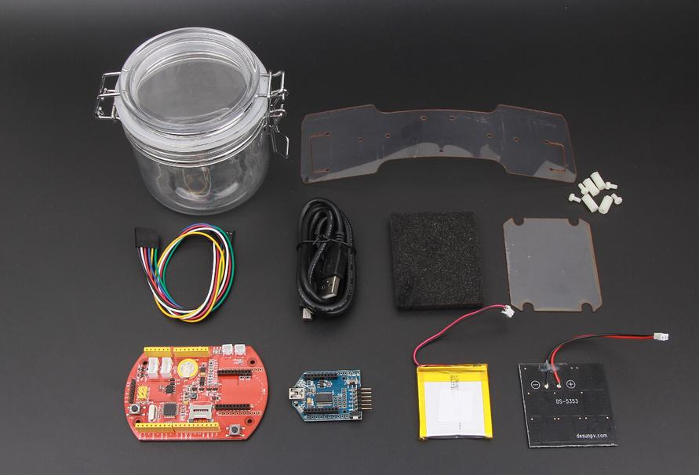
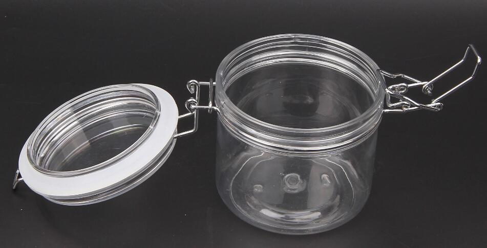
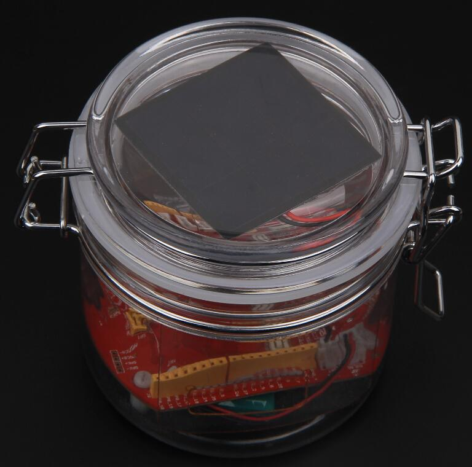
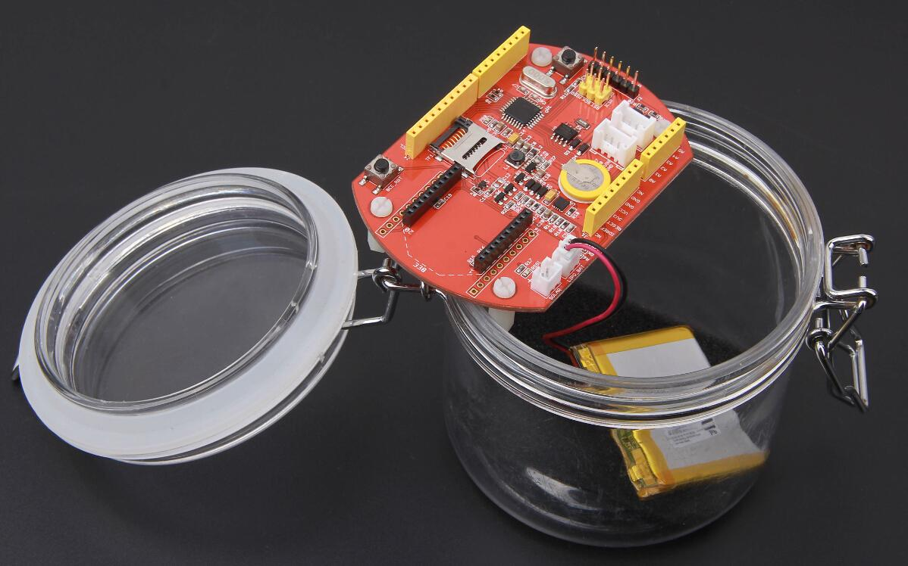
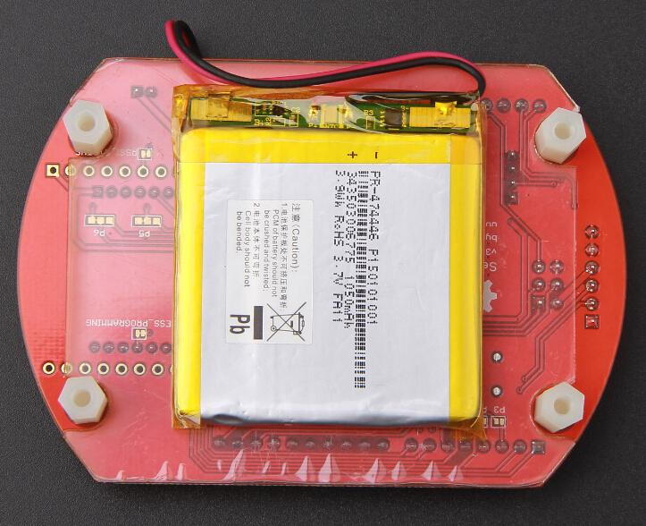
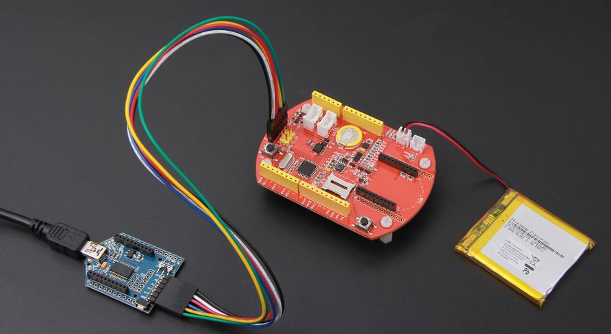
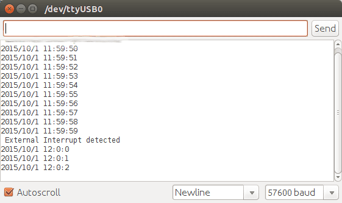
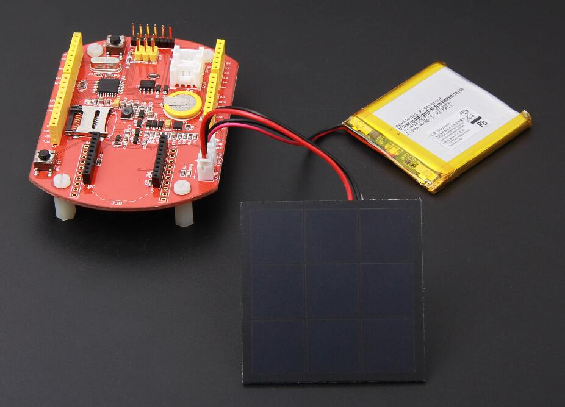
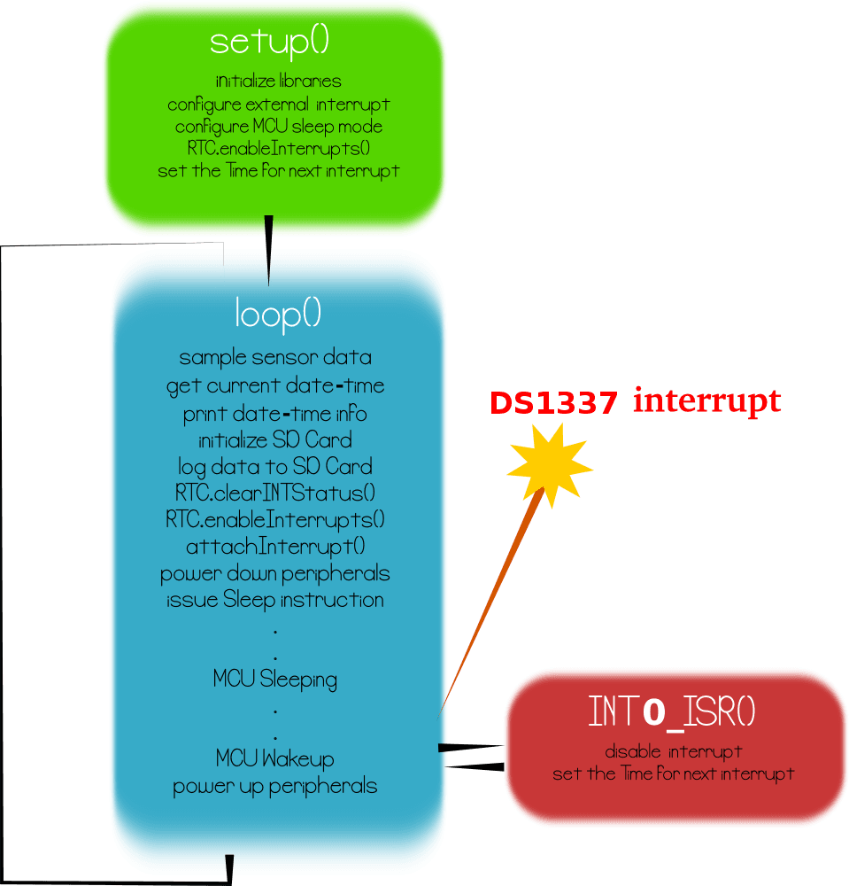

Seeeduino Stalker V3 - Waterproof Solar Kit
Stalker Kit is a Seeeduino-Stalker v3 based Wireless Sensor Network node data-logger. Seeeduino Stalker v3 is a feature rich Arduino compatible Wireless Sensor Network node. It's modular structure and onboard peripherals like RTC, SDCard interface makes it convenient to log sensor values with accurate time stamp periodically. The Seeeduino Stalker is a candidate for all your tracking, monitoring and control projects.
The Stalker Kit includes all necessary components to work with Seeeduino Stalker v3.0. Stalker Kit can be used outdoors as it comes with a plastic, waterproof enclosure. Hence, you can even put it in the water if you have some special idea. The kit comes with a Solar Panel and a LiPo Battery. They might be used in remote areas like desert or jungle by working just with the solar energy harvested and stored in the LiPo Battery.
Click here to buy

Stalker Kit Contents
| Component
|
Description
|
Quantity
|
| Seeeduino-Stalker v3
|
The Arduino Compatible WSN Node
|
1
|
| Lithium-ion polymer Battery - 1050mAh Capacity
|
Charged from Solar Panel using Stalker v3
|
1
|
| SanDisk microSD™ Card 4GB
|
Logs the sensor values and time-stamp data.
|
1
|
| Mini USB cable 100cm
|
As programming cable used with UartSBee
|
1
|
| UartSBee V4
|
Provides USB-Serial port to program Stalker V3 using Arduino IDE
|
1
|
| 6 pin cable
|
Connects UartSBee to Seeduino
|
1
|
| Seeeduino Stalker v3 enclosure
|
Waterproof plastic case
|
1
|
| 0.5w Solar Panel 53x53mm
|
Power Source
|
1
|
| CR2032 Button Cell
|
|
1
|
Features
- Since Seeeduino Stalker is designed for use as a Wireless Sensor Network node, it would be incomplete without an accompanying weather-proof enclosure. Keeping that in mind, while redesigning the newer version of Seeeduino Stalker (revision from v1.0 to v2.0) we adjusted the PCB outline and the location of the screws such that it could fit in this enclosure. The enclosure is tough and has a water proof seal.
.
- The top lid of the enclosure is kept transparent to mount a solar panel inside it.For more stability, the solar panel is stucked under the top lid of the enclosure as shown:
.
- The 1050mAh lithium polymer battery can be put into the enclosure under the Seeeduino Stalker. You can fix it by using screws and plastic pillars.
 
Application Ideas
- Wireless Sensor Network (using XBee - bought separately)
- GPS Logging (using GPSBee - bought separately)
- Data Acquisition System capable of communicating with an App running on iPhone/Android Phone/Windows Phone (using BluetoothBee - bought seperately)
- RF Remote Control (using RFBee - bought separately)
- As a simple standalone Arduino compatible physical computing platform (UartSBee must be bought separately for programming)
<imagemap>
Image:Stalker v3.0 and the Bees.jpg|thumb|none|700px|alt=Photo of a Seeeduino Stalker v3 PCB and the various Bee modules that are compatible with.|The various Bee modules that can be used with Seeeduino Stalker v3 (Click on the modules to visit their Wiki pages)
poly 441 45 508 17 567 79 505 120 UartSBee
poly 75 0 353 0 353 102 75 99 WiFiBee
poly 18 105 294 107 295 203 18 203 BluetoothBee
poly 2 212 274 212 275 327 2 326 XBee
poly 18 337 303 338 303 448 15 447 GPSBee
poly 38 459 379 459 379 570 37 571 RFBee
poly 400 55 477 106 424 147 354 97 WiFiBee
poly 307 143 336 136 398 140 392 189 333 187 318 174 302 176 BluetoothBee
poly 290 238 308 221 394 214 396 271 306 283 290 265 XBee
poly 321 353 333 330 395 306 427 364 359 393 335 380 GPSBee
poly 409 464 417 432 488 389 537 445 463 498 426 491 RFBee
poly 455 280 454 215 490 186 683 184 724 211 740 297 706 331 494 333 489 278 Seeeduino-Stalker v3
poly 570 132 573 13 802 16 803 131 UartSBee
</imagemap>
NOTE: Please note that UartSBee cannot be inserted into the Bee Series socket present on Seeeduino Stalker. The UartSBee is intended for interfacing the other Bee modules (shown in the photo above) to a computer and cannot itself be be inserted into the socket meant for these other Bee modules. There is a separate 5 way pinheader present on UartSBee as well as Seeeduino Stalker for interfacing them to each other. This pinheader is composed of: VCC (to supply power to Stalker), TXD, RXD, DTR (for controlling Stalker's Reset signal) & GND.
Usage
Getting Started
If you are new to the "Physical Computing" world and if Seeeduino Stalker is the first physical computing platform you want to begin with, then we suggest you to start with Seeeduino.
The following steps will help you assemble the hardware and software resources to get you started with Seeeduino Stalker v3
Step 1: Acquiring the Hardware
You will require the following hardware for running your first program.
|
UartsBee v4.0Required for programming the Seeeduino Stalker. Buy Here
|
Mini USB CableYou would probably have this one lying around, or if not, buy one here. We would use this to connect the UartsBee to one of the USB ports on your computer.
|
6 pin dual-female jumper wireRequired for connecting the UartsBee to Seeeduino Stalker.You might already have few lying around your workspace. If not, you can buy a colourful one here.
|
Step 2: Installing the drivers and plugging in the hardware
- UartSBee is like the multi-purpose Swiss Army knife of the Physical Computing world. There is a very detailed procedure to use UartSBee for both Windows and GNU/Linux users here. In our case it will perform three functions:
- Allow us to program the Seeeduino Stalker.
- Allow us to communicate with Seeeduino Stalker.
- Provide power (from USB power of your computer) to Seeeduino Stalker (including any peripherals connected to it).
- The first two functions of UartSBee (programming and communication) are achieved through an Integrated Circuit called FT232RL which is present on it. Before FT232RL can be used for these purposes, its drivers (certain freely available programs from FT232RL's manufacturer) must be installed on your windows/ubuntu based PC. So before proceeding further, download the driver setup file from here and install it on your Windows PC.
- UartSBee has an onboard voltage regulator and a switch to allow you to select what voltage (5.0V or 3.3V) you would like to supply to the target circuit board. In our case the target circuit board is Seeeduino Stalker and so you would need to set this slide switch to 5.0 volts
- The wiring connection scheme of our hardware is "Computer→(Mini USB Cable)→UartSBee →(Flat Ribbon Cable)→Seeeduino Stalker". The jumper wires must be connected between UartSBee and Seeeduino Stalker before connecting the UartSBee to the Computer. Refer the photos below and make sure the signals line up as shown in the table (Note: The TXD and RXD pins must be cross connected as shown in the table).
- Next connect the Mini USB cable from UartSBee to your computer. If you are using a Windows based PC, the "Found New Hardware" balloon will pop up and within a few moments the drivers for FT232RL (i.e. UartSBee) will be installed.

Seeeduino Stalker v3 <---> UartSBee v4.0 connection
Jumper Wire connections
| Seeeduino Stalker
|
|
UartSBee
|
| USB5V
|
|
VCC
|
| RXD
|
|
TXD
|
| TXD
|
|
RXD
|
| GND
|
|
GND
|
| DTR
|
|
DTR
|
Connection Notes
- Bee series socket - 2*10 pin 2.0mm pitch (which will mate with - one at a time - any of the wireless modules: XBee, BluetoothBee, GPSBee or RFBee.) Communication with these modules are done through UART.
- Serial interface – To save space and lower costs, USB<->Serial connectivity is not provided by default. You may use the FT232 based UartSBee or other USB to serial adapter boards to do the programming or communicate with the PC.
- User LED – An LED has been provided onboard for use in your application as desired.
- I2C Interface: Onboard I2C level shifter IC provides voltage translation between 3.3V and 5V devices. This allows you to connect 5.0 Volt I2 ICs to you microcontroller when its operating on 3.3 Volts.
Programming Examples
- Download and install the DS1337 library and sketches available in the resources section. DS1337 library includes modified version DateTime class by Jean-Claude Wippler at JeeLabs
- The datalogger demo sketches makes use of the Arduino SD Library.
Adjust Date/Time
- Set Arduino board as
Arduino Pro or Pro Mini (3.3V, 8MHz) w/ ATmega 328.
- Open adjust.ino example from DS1337 library
- Set the current date/time using the DateTime Class object dt in the example:
-
DateTime dt(year, month, date, hour, min, sec,week-day(starts from 0 and goes to 6));
- Ex:-
DateTime dt(2015, 10, 1, 11, 43, 0, 4);
- compile and upload to Seeeduino-Stalker v3
Get Current Date/Time
- Set Arduino board as
Arduino Pro or Pro Mini (3.3V, 8MHz) w/ ATmega 328 .
- Open now.ino example from DS1337 library
- The current date/time is read from DS1337 using
RTC.now() function.
- Ex:-
DateTime now = RTC.now();
- compile and upload to Seeeduino-Stalker v3
DS1337 Interrupts
This example is a demonstration of interrupt detection from DS1337 INT output. This feature is useful for data-logger functionality where the MCU is put to sleep mode when not in use and DS1337 INT wakes up the CPU periodically. This extends battery power. The complete operation is documented in the code.
- Solder P3 jumper.
- This connects the DS1337 interrupt out pin to ATmega328 INT0 pin.
- Set Arduino board as
Arduino Pro or Pro Mini (3.3V, 8MHz) w/ ATmega 328.
- Open interrupts.ino example from DS1337 library
- compile and upload to Seeeduino-Stalker v3

interrupts.ino output
Data Logger Example
The principal application of Seeeduino Stalker v3.0 is data-logging of sensor signal like battery voltage, etc along with the time-stamp. These sketch puts the MCU in sleep mode when not performing data sampling / logging operation. The complete implementation is documented very well in the code. The following section gives an overview :

Data Logger examples hardware setup
- StalkerV30_DataLogger_10Sec.ino
- This sketch logs battery voltage data to SD card configured by
RTC.enableInterrupts(h, m, s) function.
- The periodicity is provided using h, m and s. Once an interrupt is detected, the next interrupt time is updated by advancing the h,m and s value. The DateTime Class comes handy for this.
- ex:-
interruptTime = DateTime(interruptTime.get() + interruptInterval); //decide the time for next interrupt
- This sketch also produces verbose output i.e the various events happening inside MCU are displayed in serial terminal.

Overview of Data-logger implementation
Resources
How to buy
Click here to buy :Comming Soon.
See Also
External Links
Links to external webpages which provide more application ideas, documents/datasheet or software libraries.
Copyright (c) 2008-2016 Seeed Development Limited (
www.seeedstudio.com /
www.seeed.cc)
This static html page was created from http://www.seeedstudio.com/wiki